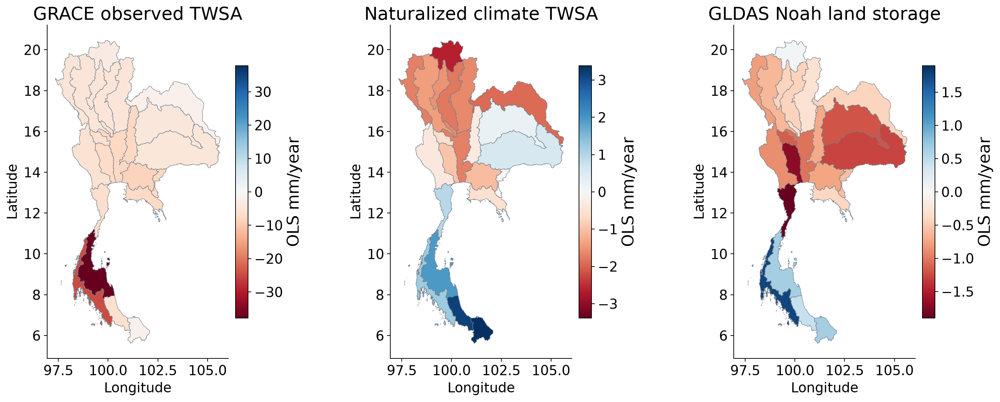
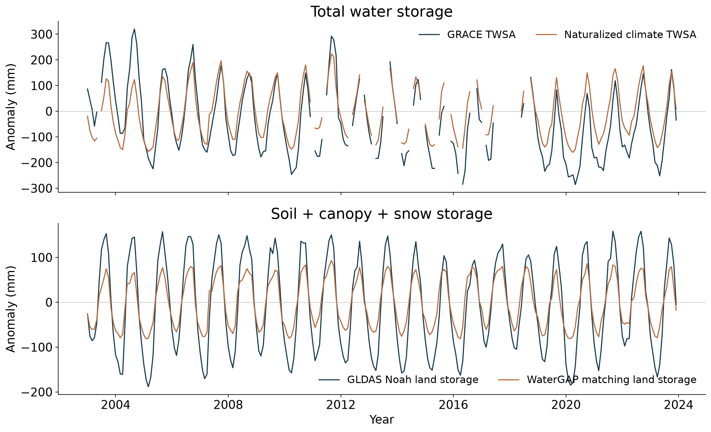
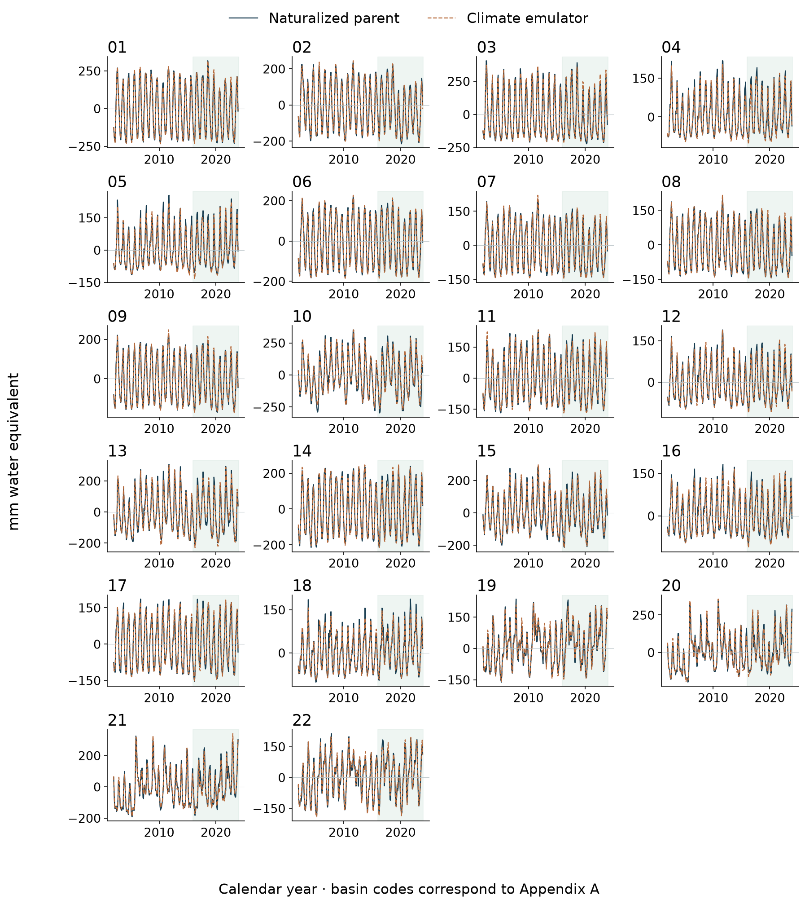
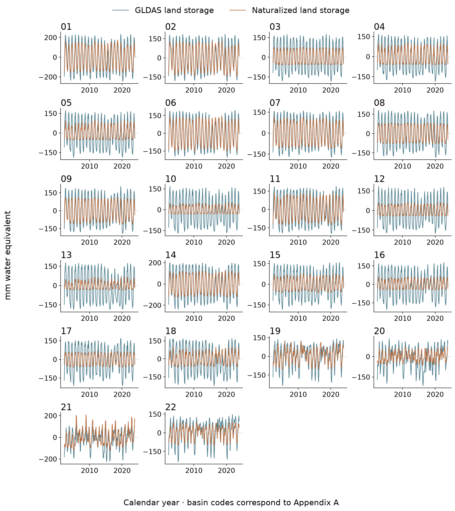
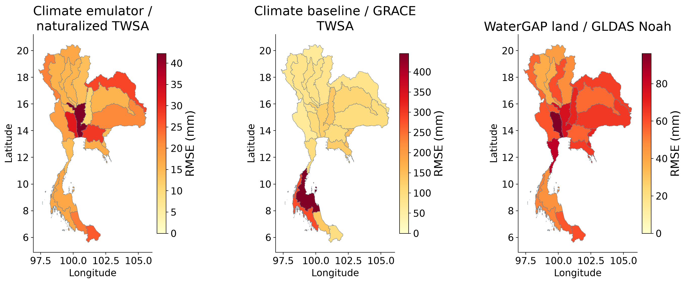
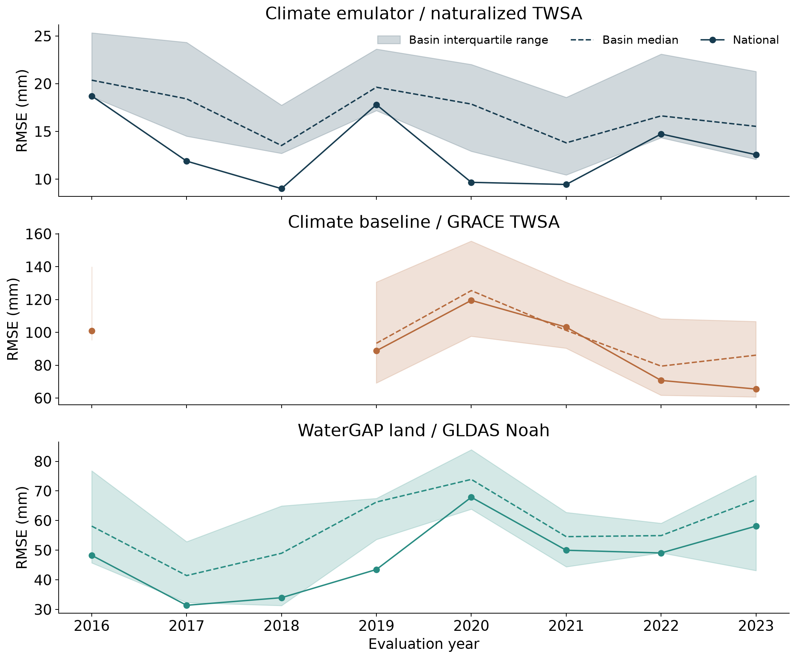
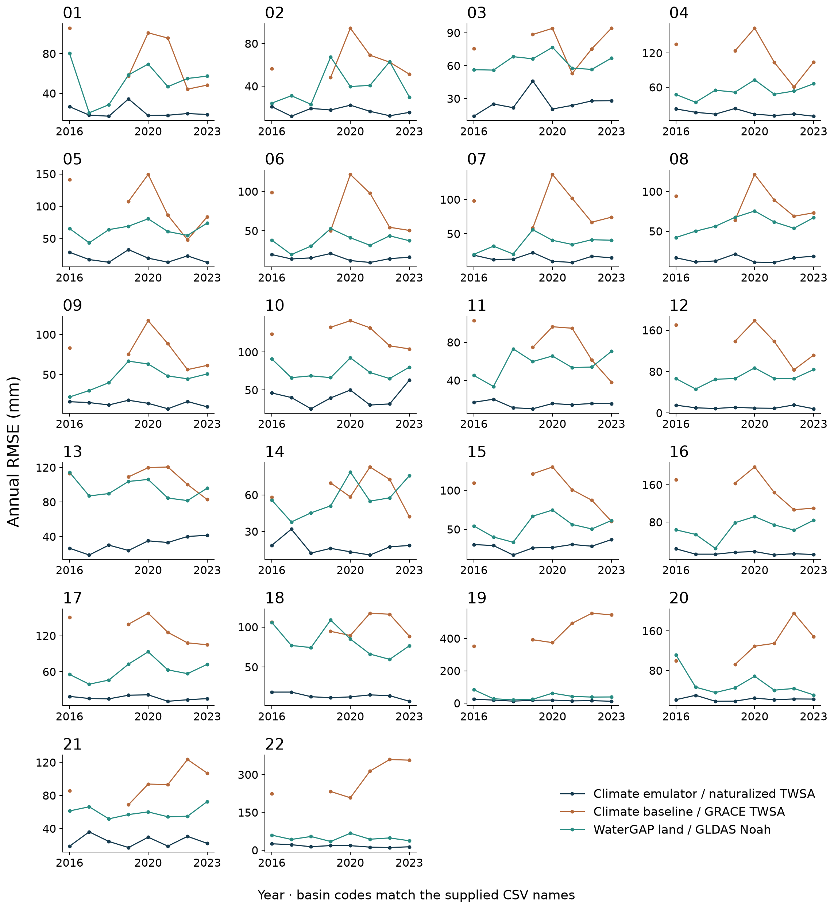

TWSA climate, GLDAS and RMSE
Spatial basin maps, national histories and temporal panels for all 22 basins. RMSE uses 2016–2023. Storage trend maps use 2003–2023 common available months.
Climate baseline means naturalized WaterGAP TWSA. The weather emulator reconstructs that parent. GLDAS Noah land storage includes soil, canopy and snow, excluding groundwater and surface water. Each RMSE comparison retains its own target and sample count.
Pooled basin RMSE values · Annual RMSE and sample counts · Definitions and reproduction
1. Spatial storage trends
2003–2023 common available months within each basin; calendar-month fixed-effect OLS. These differ from full-record seasonal Sen slopes. GLDAS land storage excludes groundwater and surface water. Each panel has its own scale; the three storage definitions are not interchangeable.
PNG · Vector PDF

2. National temporal comparison
Separate panels retain different storage definitions. Top: observed and naturalized total storage. Bottom: matching land compartments. Gaps are retained; no direct full-TWS error is assigned to partial GLDAS land storage.
PNG · Vector PDF

3. TWSA climate reconstruction for all 22 basins
Naturalized parent-model target and frozen meteorological ensemble reconstruction. Green shading identifies the held-out 2016–2023 period; earlier values are training or validation context. The emulator targets a hydrological model, not independently observed storage.
PNG · Vector PDF

4. Matched GLDAS time series for all 22 basins
Matched soil + canopy + snow anomalies in mm. GLDAS and WaterGAP share climatic influences. Agreement evaluates land-component consistency; it cannot validate groundwater or the entire human residual.
PNG · Vector PDF

5. Spatial RMSE by evaluation target
Pooled 2016–2023 metrics. Climate reconstruction targets naturalized TWSA; the climate baseline is separately compared with observed GRACE TWSA; land storage is compared with matching GLDAS compartments. Pair counts differ because GRACE has gaps. Compare basins within the same panel, rather than ranking models across different targets.
PNG · Vector PDF

6. Annual RMSE through time
Years 2016–2023; at least eight paired months are required per annual score. GRACE mission-gap years may have no score. Shading describes variation among basins, not a confidence interval. Each panel has its own vertical scale and evaluation target.
PNG · Vector PDF

7. Annual RMSE for all 22 basins
All three explicitly labelled evaluation targets are retained. Different targets and compartment variances prevent interpreting a smaller cross-target RMSE as a better climate model. Missing annual scores remain gaps.
PNG · Vector PDF
